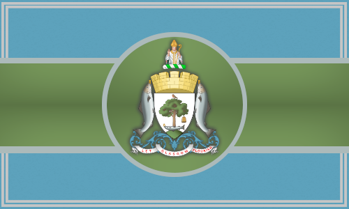

Rocène Diplomatie
Alliance de Glasgow

Alliance diplomatique
Organisation méritocratique fondée sur la prospérité, la souveraineté, la communauté et l’unité.
L’Alliance de Glasgow est une organisation méritocratique reposant sur les valeurs de prospérité, souveraineté, communauté et unité. Les citoyens suivent la Charte de Glasgow qui définit la structure gouvernementale, les responsabilités et les politiques de l’alliance.
Immigration et Admission
Les personnes actives en politique ou en guerre peuvent demander à rejoindre Glasgow. Toute candidature doit être faite sur le jeu et sur Discord dans le respect des règles d’admission.
Les nouveaux membres ayant moins de 1000 points nationaux doivent passer par l’Académie. La violation de la Charte ou des politiques peut entraîner l’exclusion de l’alliance.
Gouvernement
Monarchie : Le Ri est le chef de l’État et du gouvernement, tandis que le Tanaiste est l’héritier et co-chef. Le Ri supervise la formation du Conseil Privé et les départements de l’alliance.
Conseil Privé : Composé des Flaiths et de leurs Guths (adjoints), il dirige les départements suivants :
- Administration : Gère les admissions, recrutements et tâches administratives.
- Finance : Contrôle les finances, le commerce et les programmes de croissance.
- Diplomatie : Établit et maintient les relations avec d’autres alliances.
- Guerre : Supervise la défense, la coordination des raids et l’aide aux citoyens en temps de conflit.
Affaires étrangères
Glasgow agit en tant qu’entité souveraine et peut établir toute relation diplomatique jugée nécessaire pour protéger ses intérêts. L’alliance se réserve le droit de défendre ses citoyens et ses alliés en cas d’espionnage, raids ou guerre.
Référendums
Le gouvernement utilise des référendums pour consulter les citoyens sur les taxes, traités, déclarations de guerre ou raids. Les résultats guident les décisions de l’alliance pour le bien commun.
Amendements et dissolution
- Amendements : Toute modification de la Charte doit être approuvée par référendum à majorité simple et appliquée sous 48 heures.
- Dissolution : La décision de dissoudre l’alliance requiert un vote favorable d’au moins 75%+1 des membres.
Résumé pratique
Glasgow fonctionne selon un système hiérarchique clair, combinant monarchie, conseils spécialisés et consultation citoyenne via référendum. L’alliance privilégie la souveraineté, la coopération avec ses membres et la défense collective. Tout citoyen ou membre doit respecter la Charte à tout moment pour assurer la cohésion et la sécurité de l’alliance.
Membres de l'Alliance de Glasgow
L'Alliance de Glasgow compte actuellement 17 membres qui respectent la Charte et participent à la coopération et à la défense collective.
Ces États-membres collaborent étroitement pour assurer la défense collective, développer des programmes communs et garantir que tous les citoyens respectent les valeurs et la Charte de l’alliance.